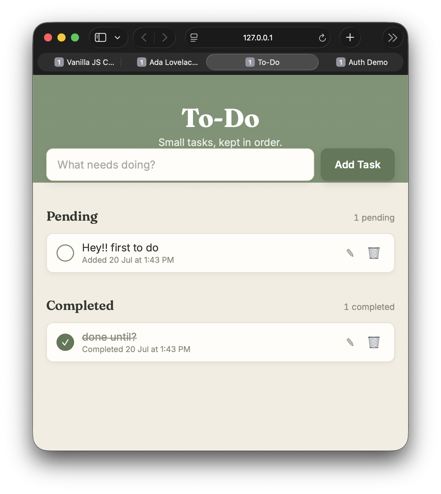

To-Do App
An interactive to-do list built with HTML5, CSS3, and vanilla JavaScript.

Features
Add, edit, and delete tasks inline
Timestamps for each task
localStorage
persistence — tasks survive page refresh
Launch App →